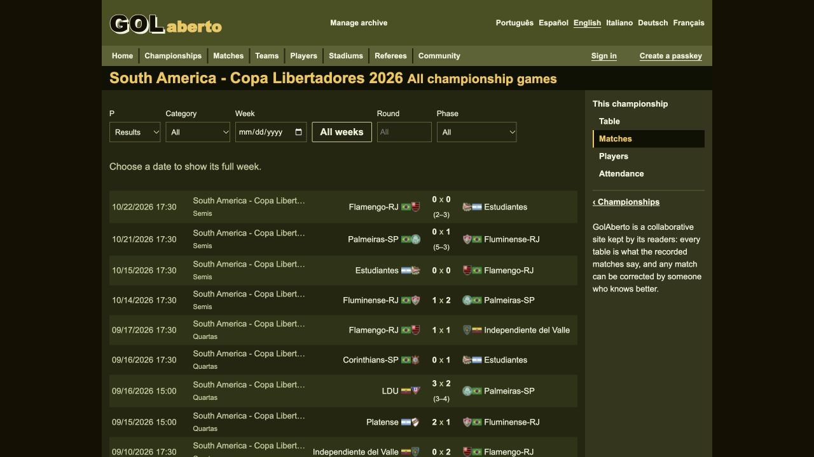
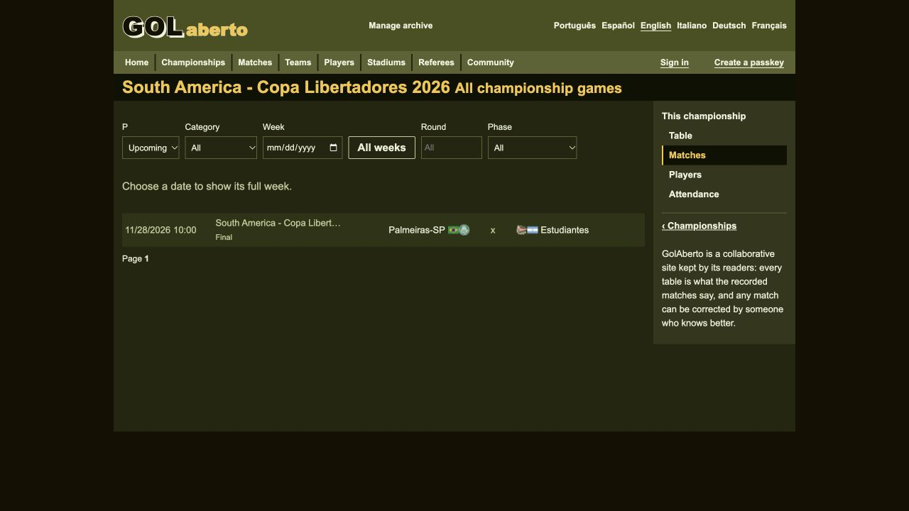
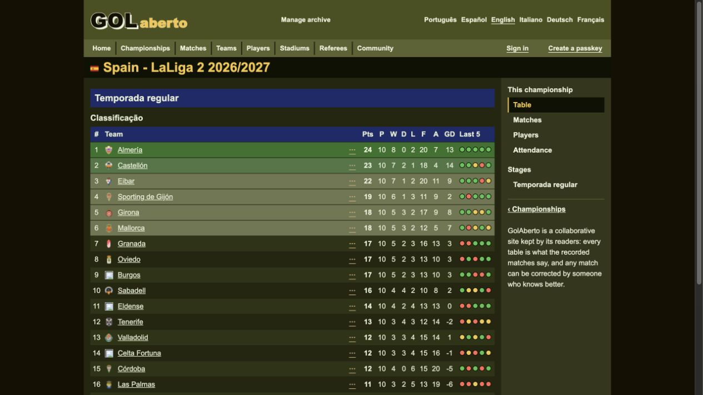
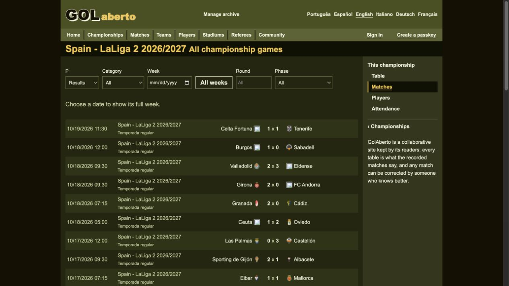
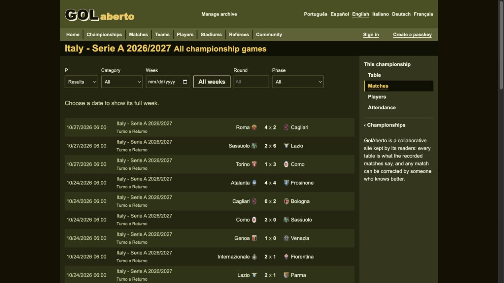
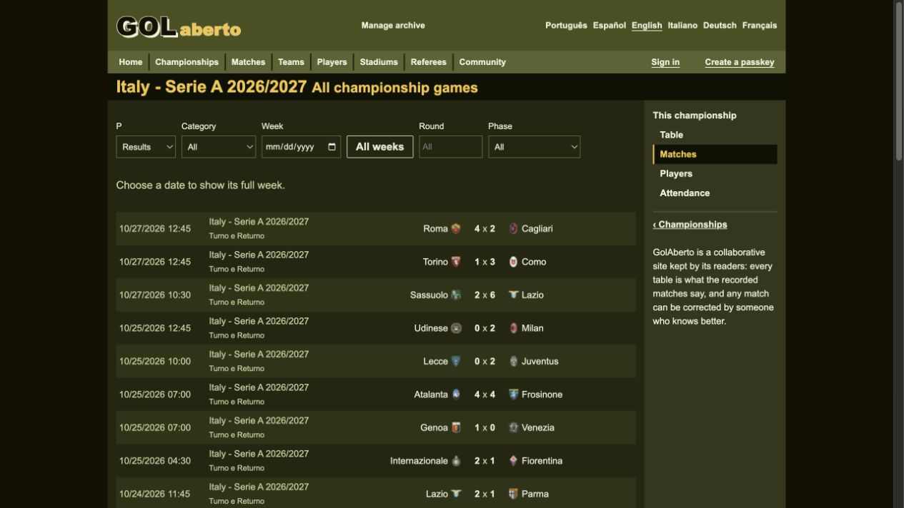
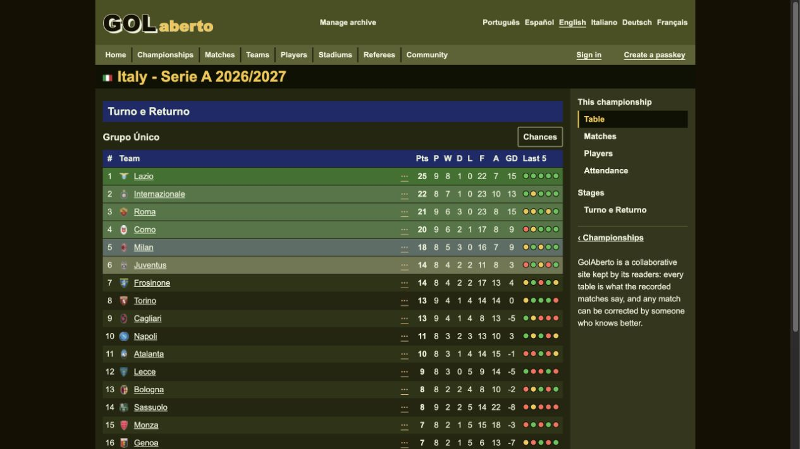
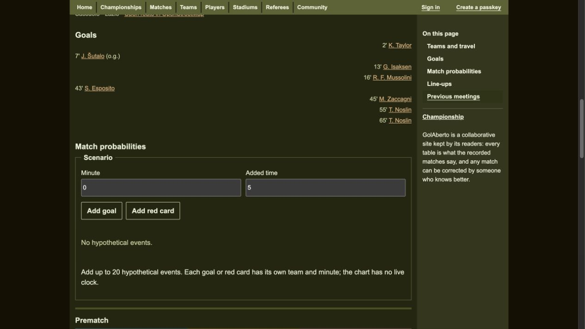
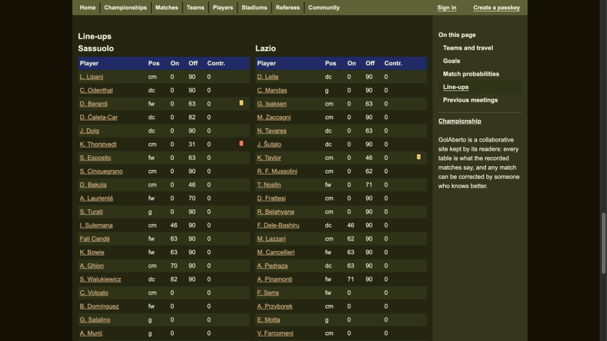

Golaberto · Engineering journal · 27 October 2026
All 21 active championships are syncing locally.
All active championships have verified SofaScore sources and phase mappings. Completed results use batched summaries; eligible new finals also receive lineups, goals, substitutions and player-game records through the custom Rust fetcher.
All required validation gates passed
Local delivery · No new visual design was needed; the existing archive interface remains the display contract.
Local merge and PR preparation · 2026-10-27T21:16:45.635070-07:00
The combined branch passes its integration checks.
The navigation and standings commit and the SofaScore implementation are consolidated on codex/golaberto-sync-and-navigation. Remote main at cea02d913 merged without conflicts. Regeneration picked up upstream target-verification commands and the mirror workflow. Publication review found no new credentials or unrelated pending files; merge review found no actionable regressions in the overlapping navigation, Cortex and SSR code.
The application’s pinned CUE container build remains the sole updater build. The unused standalone helper Dockerfile with its floating Debian base was removed, its guide now points to the owning CUE file, and trailing whitespace was removed. A final simplification pass found no further useful changes.
Doctor, generation, lint and application unit tests exited 0, including all 49 SofaScore Python cases. Focused framework verification passed 16 Omnishell tests with 52 steps and 14 Pronto route/SSR tests. Rebuilding the fetcher passed four Rust unit tests and its JSONL process test.
| Isolated target | Exit | Observed duration |
|---|
ci-replay | 0 | 74 s |
ci-visual | 0 | 360 s |
ci-constraints | 0 | 98 s |
ci-acceptance | 0 | 207 s |
The first acceptance attempt passed 16 cases and timed out while changing the chart minute. The outer screen can become populated before its scenario initializes. The test now waits for the actual chart before editing, retaining its existing minute, hover, focus and contrast assertions. The final full acceptance target passed. Its output was clipped before the aggregate summary; no final acceptance count is claimed. The SQL constraint suite explicitly reported 76 passed and zero failed, including all nine SofaScore regressions.
No new visual oracle was needed for this integration step. Existing interface captures remain the accepted reference; the merged artifact passed the full visual and browser flows. Publication and merge reviews used the lead’s inherited model configuration; integration execution used GPT-6.1 Terra. Remaining deployment work is explicit: automatic syncing targets Docker/PostgreSQL, and a Cloudflare Worker/Durable Object execution adapter has not been built. Source enrollment and data-repair audits describe the local database; another deployment requires its own enrollment.
Structured merged-branch verification · Observed gate output
21active championships enabled
53local phases covered
68exact stage bindings
6/minshared request ceiling
All active championships · client date 27 October 2026 · capture 2026-10-28T02:34:45.658260+00:00
Every active championship is configured and syncing.
Before this expansion, only Italy Serie A was enabled. All 21 championships whose recorded dates include October 27 are now enabled, and every source has completed a successful request. Brazil Série C ended October 25 and remains disabled. At this capture there are 0 overdue resources, 21 unresolved reviews and 5 unavailable friendly references returning HTTP 404. The worker is running with zero restarts since its final resume; its three deployed module hashes match the tested source.
Enrollment used 67 unique custom-Rust event metadata requests to verify tournament, season, phase and team identities, including each South American cup group. Date differences were accepted under the existing schedule policy. Two invalid inherited fixture references were isolated: Copa do Brasil’s Vasco–Palmeiras reference was corrected from 16988178 to the verified 17166359; Azerbaijan–Uganda still points to an event with different teams and remains held for review. Historical lineup and incident backfills were not enabled. Previously paused sources received a fresh detail cutoff; Serie A retained its existing cutoff.
Nineteen sources cover their whole provider competition. Nations League is restricted to the two local League D stages, and national friendlies update only locally bound fixtures. Exact cup stage keys include their round descriptor, with no fallback to a bare stage. Two verified Final phases, their groups and four existing-team memberships were added for Libertadores and Sudamericana; their fixtures were imported by replaying saved responses with no additional requests.
Verified source + scope→Persistent due queue→Custom Rust transport→Guarded domain changes
Round summaries precede detail work, known resolved phases avoid redundant archive scans, and fixture seeding preserves retry backoff and parked deadlines. Individual terminal fixtures stop after their next-day check only when their outcome has been accepted. Dates and kickoff times still apply automatically; identity, score and manual collection conflicts remain protected.
| Championship | Tournament / season · verified event | Scope | Requests | Reviews |
|---|
| Brazil - Campeonato Brasileiro - Série B 2026 | 390 / 89840 | competition | 9 | 0 |
| Brazil - Campeonato Brasileiro 2026 | 325 / 87678 | competition | 8 | 0 |
| Brazil - Copa do Brasil 2026 | 373 / 89353 | competition | 3 | 0 |
| England - Championship 2026/2027 | 18 / 97037 | competition | 7 | 0 |
| England - Premier League 2026/2027 | 17 / 96668 | competition | 4 | 1 |
| Europe - Champions League 2026/2027 | 7 / 96518 | competition | 4 | 1 |
| Europe - Conference League 2026/2027 | 17015 / 96529 | competition | 4 | 0 |
| Europe - Europa League 2026/2027 | 679 / 96522 | competition | 4 | 3 |
| Europe - Nations League 2026 | 10783 / 89945 | stages | 4 | 0 |
| France - Ligue 1 2026/2027 | 34 / 96127 | competition | 5 | 0 |
| Germany - 2. Bundesliga 2026/2027 | 44 / 97406 | competition | 4 | 0 |
| Germany - Bundesliga 2026/2027 | 35 / 97464 | competition | 4 | 0 |
| Italy - Serie A 2026/2027 | 23 / 95836 | competition | 11 | 0 |
| Netherlands - Eredivisie 2026/2027 | 37 / 96143 | competition | 4 | 0 |
| Portugal - Liga Primeira 2026/2027 | 238 / 97436 | competition | 4 | 0 |
| South America - Copa Libertadores 2026 | 384 / 87760 | competition | 7 | 0 |
| South America - Copa Sudamericana 2026 | 480 / 87770 | competition | 7 | 0 |
| Spain - La Liga 2026/2027 | 8 / 97268 | competition | 5 | 1 |
| Spain - LaLiga 2 2026/2027 | 54 / 97280 | competition | 2 | 0 |
| Turkey - Süper Lig 2026/2027 | 52 / 98080 | competition | 4 | 0 |
| World - National Friendlies 2026 | 851 / 87155 | fixtures | 32 | 15 |
The table records 136 persisted worker and repair requests as of the capture, including the earlier Italy pilot. Enrollment metadata research is separate. Six cup-route checks returned five usable summaries and one unpublished Copa do Brasil final; the five successful summaries were reused locally. Request counts alone do not establish the 30-minute freshness target under provider delays.

Completed cup results after source verification and the corrected slug routes.
The imported Palmeiras–Estudiantes final appears under Upcoming, with its new Final phase and localized kickoff.Live validation and remaining data
Live use exposed two defects that the pilot did not exercise. Cup URLs now include /round/28/slug/semifinals; failed attempts remain in history, and verified responses were replayed. A friendly reference returned a different season and competition, correctly failing source validation. A SQL variable collision initially blocked its rejection; additive migration 055 fixes that path. The stored bad response is now parked with a parse review, both cached finals applied, and unrelated sources continued.
| Championship | Review reason | Count |
|---|
| World - National Friendlies 2026 | provider fixture has different teams | 1 |
| Europe - Champions League 2026/2027 | manual fixture fields conflict with provider | 1 |
| Europe - Europa League 2026/2027 | bound fixture conflicts with stage or teams | 2 |
| Europe - Europa League 2026/2027 | manual fixture fields conflict with provider | 1 |
| World - National Friendlies 2026 | team is not bound | 3 |
| World - National Friendlies 2026 | terminal outcome requires review | 10 |
| World - National Friendlies 2026 | response season differs from configured source | 1 |
| England - Premier League 2026/2027 | manual fixture fields conflict with provider | 1 |
| Spain - La Liga 2026/2027 | terminal outcome requires review | 1 |
The five 404 references are recorded separately in resource errors with increasing retry delays. They are not silently reidentified. Reviews and missing references do not pause the shared provider queue. No score conflict or uncertain team identity was accepted to clear the queue.
Verification for this expansion
| Gate | Exit | Observed evidence |
|---|
./saytw doctor | 0 | Target toolchain verified before the expansion. |
./saytw generate | 0 | Owned SQL and container artifacts regenerated, including migrations 054 and 055. |
./saytw lint | 0 | Final run after migration 055. |
./saytw test | 0 | Final serial run; includes 49 SofaScore Python tests. |
ci-replay / ci-constraints --jobs 1 | 0 | Final serial integration: replay 169 seconds, constraints 118 seconds; migration 055 and all nine SofaScore tests visible. Aggregate output clipped by BuildKit. |
Focused real-database SofaScore regressions | 0 | 9 passed, 0 failed against the migrated imported database, each transaction rolled back. |
Fixture cadence generated SQL rollback check | 0 | Failure backoff, healthy acceleration, settled NULL deadlines and active-attempt deadlines preserved. |
Updater image build / cargo test --release --locked | 0 | 4 Rust unit tests and 1 JSONL process test passed; deployed Python module hashes match tested source. |
Operational configuration and cached replay | 0 | 21 sources, 53 phases, 68 stage bindings, zero unbound phases; two cup finals imported from saved responses; malformed friendly parked. |
An initial concurrent lint/test generation raced over shared generated files; that test run failed and the overlapping integration was cancelled. Final lint, unit tests and integration ran serially and passed. The final constraint log shows migration 055 and all nine SofaScore regressions individually passing; BuildKit clipped later output at 2 MiB, so no aggregate suite count is claimed.
No new visual oracle was needed for this backend and data slice. I used the running archive to inspect completed cup results, selected Upcoming and verified the new final. Backend review used GPT-6 Astra; implementation and focused QA used GPT-6.1 Terra as the available substitute for the skill’s routing. Final review had no actionable findings. The simplification pass retained a shared phase-selection helper, narrow pending-fixture discovery and one owned rejection-function definition; no further changes were warranted. Remaining human decisions concern the specific held data above.
Enrollment and primary mapping audit · Final source and review snapshot · Worker state and deployed hashes · Structured gates · Gate evidence · Verified finals · Copa reference repair · Cup response reuse
Initial pilot and prior repairs
11pilot HTTP requests
34,660identities recovered locally
33missing final results filled
0historical detail requests
Competition repair · 2026-10-28T00:28:08.700456+00:00
LaLiga 2 entered the archive and the original review queue was cleared.
Verified provider seasons and stage scopes repair the six configuration items. Importing the original LaLiga 2 championship and its matches resolves all 462 absent match references. At that capture, the application had zero unresolved SofaScore reviews; the broader activation above subsequently discovered additional data conflicts.
22LaLiga 2 teams
462fixtures imported
110completed results imported
468reviews resolved in this repair
The Série C stage memberships match all local teams in its first phase and both second-phase groups. Nations League maps only League D Groups 1 and 2; its local region is corrected to Europe and its dates to September 24–November 16, matching its twelve recorded fixtures. Existing names, UUIDs and URLs are preserved.
LaLiga 2 retains its local regular-season phase, standings group, promotion and relegation zones, match timestamps and scores. The import also preserves 462 initial match-history records and 18,876 historical odds positions from 858 saved snapshots. Raw source records remain in the private legacy archive. The source MySQL database was read only.
Research used six bounded custom-Rust requests: three season inventories and three exact-season standings. All fixtures and historical data came from local MySQL; no old match details were fetched. At that capture, the three researched sources were configured and paused, with Serie A the sole enabled source. The bulk activation above supersedes that selection; the inactive Série C season remains disabled.

The running LaLiga2 table reflects the 110 imported results. All 22 teams are present.

The Matches link opens the imported archive through the existing championship navigation.
The complete transaction passed rollback validation and backend review before application. Independent post-commit checks verified all fixture, membership, zone, history, odds and binding counts, zero open reviews, and the original enabled-source selection. I opened the table, followed Matches and checked the displayed results. Database and updater remained healthy.
No new visual design, application code or schema was required. The owning verification was the data transaction and rendered archive flow; software suites from earlier implementation entries were not rerun for this data-only repair. The final simplification pass retained the existing import and recovery functions; no further changes were needed.
Research and before/after audit · Observed validation record · Open local LaLiga2
Manual identity research · 2026-10-28T00:02:35.166391+00:00
All twelve team mapping reviews are resolved.
Primary SofaScore team pages, local names, countries, full names, cities and competition categories established the correct identities. Three incorrect inherited IDs were corrected, three valid IDs were confirmed, and six absent team records were imported from local MySQL using their original deterministic UUIDs. Reserve teams remain distinct from their parent clubs.
| Local team | Country | Verified SofaScore ID | Resolution |
|---|
| United Arab Emirates | United Arab Emirates | 4727 | Corrected 298263 → 4727 |
| Katowice | Poland | 3112 | Confirmed existing ID |
| Bohemians | Ireland | 3173 | Confirmed existing ID |
| GKS Bełchatów | Poland | 3128 | Corrected 3112 → 3128 |
| FC Yelimay | Kazakhstan | 464803 | Corrected 3173 → 464803 |
| Sint Maarten | Sint Maarten | 298263 | Confirmed existing ID |
| Burgos | Spain | 2854 | Imported missing team and confirmed ID |
| Eldense | Spain | 47321 | Imported missing team and confirmed ID |
| Celta Fortuna | Spain | 24336 | Imported missing team and confirmed ID |
| FC Andorra | Andorra | 324871 | Imported missing team and confirmed ID |
| Real Sociedad B | Spain | 24360 | Imported missing team and confirmed ID |
| Ceuta | Spain | 2869 | Imported missing team and confirmed ID |
The repair was validated in a rollback transaction, reviewed, then applied atomically to the local application database. Bindings and review resolutions retain the primary source URLs and verification timestamp. Post-commit checks confirmed all twelve mappings, all twelve resolved reviews and the unchanged original six team rows.
The six imported records are Burgos, Eldense, Celta Fortuna, FC Andorra, Real Sociedad B and Ceuta. Their core metadata comes from local MySQL. No match history was imported for them. The background updater's API request total stayed at 11; research used the public team pages linked in the table.
At this capture, 468 reviews remained: 462 absent match references and six competition/phase configuration issues. The later competition repair above resolved all 468. Team reviews were already clear.
Before and after research audit · Validation and application record
Schedule policy update
Dates and kickoff times follow SofaScore automatically.
The accepted policy now replaces local dates and kickoff times on a verified fixture, including clearing a kickoff when the provider marks its time unconfirmed. First imports and later editor changes follow the same rule. Identity, phase, result and detail safeguards remain in place.
18scheduling corrections applied
2cached rounds replayed
0additional API requests
0remaining Serie A reviews
Rounds 8 and 9 were replayed offline. Successful application resolved reviews limited to date and kickoff fields; mixed reviews remain guarded. The request total stayed at 11. At this capture, 480 separate legacy identity-recovery issues remained quarantined; the later manual team research above resolved twelve of them. Migration 053 installed successfully on the imported database and the updater is running again.

Before: the imported round shared placeholder dates and 13:00 UTC kickoffs, displayed here as 06:00 local time.
After: Sassuolo–Lazio shows 10:30 local time, and the preceding round spans October 23–25 with distinct kickoffs. Existing scores are preserved.Verification for this update
Doctor, generation, lint and all seven focused database regressions exited 0. The retained-database migration replay and isolated constraint envelope both passed uncached, including all seven SofaScore tests. BuildKit clipped the larger constraint log before its aggregate test count; no total is claimed. Full visual and browser acceptance suites belong to the initial implementation below and were not repeated for this SQL policy change.
I used the running championship matches page and verified revised days and local times. Backend review found no actionable issues. No design tool or new visual oracle was needed for the policy change. The final simplification pass retained one shared SQL body for migrations 051 and 053; no further changes were warranted. Review and gate execution used the inherited Codex agent configuration.
Before and after audit · Observed gate output · Structured gate record
Traffic and scheduling
| Resource | Requests |
|---|
| Round inventory | 1 |
| Round summaries | 4 |
| Lineups | 3 |
| Incidents | 3 |
One inventory request, four round responses and six detail responses covered the pilot. The successful bodies contain 704,822 bytes of decoded UTF-8 JSON, excluding headers and compression effects.
Daily inventory and persisted due times replace repeated archive scans. Active rounds poll at most every 20 minutes. The shared budget permits six requests per minute with one in flight; validators, cache expiry, cooldown and bounded detail retries persist across restarts.
The 30-minute completed-result objective depends on provider availability, cache freshness and queue capacity. Status and overdue resources expose delays.
Data changed
| Italy played fixtures | 50 → 83 |
|---|
| New finals with details | 3 |
|---|
| Player-game entries | 146, including bench selections |
|---|
| Goals / substitutions | 18 / 30 |
|---|
| New players | 3 |
|---|
| Existing player confirmed | 1, by exact name and birth date |
|---|
| Overdue resources | 0 at final capture |
|---|
Thirty older missing results came from three locally pending rounds. Their historical lineups and incidents were skipped. All six detail resources for the three eligible new finals completed.
All 18 date/time proposals have now been applied from saved responses. The initial pilot held them for review; the schedule-authority update below supersedes that policy. The offline identity recovery also quarantined 480 missing-target, duplicate or configuration cases without provider lookups.
The delivered path
Persisted due queue→Custom Rust transport→Retained raw response→Normalize + reconcile→Guarded domain transaction→Existing CDC and pages
The transport follows the original Rust fetcher’s browser emulation, reuses its client and exposes JSONL responses, validators and request counts. The coordinator records opaque responses before decoding them. Saved responses can be replayed without another GET.
Recovered provider IDs retain existing local UUIDs. Player identity is global across clubs; transfers add memberships. Ambiguous identities and other edited fields require review. Dates and kickoff times always follow SofaScore. Round and status conflicts preserve the existing values while an independent empty result tuple can receive a final score; any result conflict protects the whole tuple. Incomplete details never authorize collection deletion.
Request bookkeeping stays in the private sofa schema. Unchanged responses do not rewrite football rows, which prevents metadata polling from invalidating odds calculations. Real football changes continue through the established computation pipeline.
The imported volume was preserved and backed up before additive migrations. The updater, web server, renderer, transforms and computation service were verified running; the migration service exited successfully. The running Python coordinator’s hash matches the source tested here.
Used in the local application
I opened the championship, followed its Matches link, opened Sassuolo–Lazio, and inspected the imported goals, cards and on/off times. These are captures of the running application after the pilot.

The table reflects 83 played fixtures after the missing results were filled.Three new finals and previously missing round results appear in the existing localized archive.
Goals preserve scoring side and own-goal attribution.
Player-game entries include starters, substitutions, cards and unused bench selections.Initial implementation verification
| Command or gate | Exit | Evidence |
|---|
./saytw doctor | 0 | Toolchain and target configuration |
./saytw generate | 0 | CUE owns generated SQL, manifests and screens |
./saytw lint | 0 | Types, policies, SQL, identity, pipelines and facts |
./saytw test | 0 | Application unit suite, including 39 SofaScore Python tests |
./saytw integrate --jobs 1 | 0 | Retained migration replay, full visual, browser acceptance and constraints |
Updater image build: cargo test --release --locked | 0 | 4 Rust unit tests and 1 JSONL process test |
Focused database regressions | 0 | 7 passed; included in the broader 74-test SQL suite |
Seed reproducibility | 0 | 2 passed; the original seed remains unchanged |
Database regressions exercise queue coalescing, lease fencing, saved-response ordering, 304 behavior, no-op domain writes, manual edits, natural appearance IDs, incident ownership, season-scoped stages and editor-trigger permissions. The visual harness now waits for all 1,227 seeded player-stat scopes before selecting route fixtures and measuring layout.
Final integration ran serially after overlapping browser runs exhausted the test VM’s memory. The retained-volume replay, full visual suite, browser acceptance and constraint envelopes all passed on the serial run. The earlier single-row seed experiment was fully reverted; the original seed remains reproducible.
Pronto workflow: backend review used GPT-6 Astra; implementation and focused QA used GPT-6.1 Terra as the available substitute for the skill’s GPT-5.6 Terra route. No design tool was required for this backend slice. The final simplification pass retained the transport boundary and transactional guards; no additional code changes were warranted.
Operate and review
python3 /app/sofascore/runtime.py status
python3 /app/sofascore/runtime.py plan
Run these inside the updater container. They report queue freshness, request totals, provider cooldown and reviews without fetching SofaScore. The operating guide covers enablement, identity confirmation, source-specific review queries, acknowledgement, pause/resume and cached replay.
Open the local Italy results · Initial aggregate pilot capture · Gate record
Initial pilot capture, before automatic schedule acceptance
{
"source": {
"id": "ae3a8ff5-c270-5a4a-8653-f2080c3d264e",
"enabled": true,
"overdue": 0,
"reviews": 18,
"requests": 11,
"season_id": 95836,
"next_due_at": "2026-10-28T01:54:20.057882+00:00",
"detail_after": "2026-10-27T21:30:16.440058+00:00",
"payload_bytes": 961410,
"championship_id": "a0200000-0000-4000-8000-000000000604",
"last_success_at": "2026-10-27T21:59:38.584793+00:00",
"unique_tournament_id": 23
},
"captured_at": "2026-10-27T23:18:57.644099+00:00",
"played_games": 83,
"baseline_rows": {
"game": 40,
"goal": 18,
"player": 3,
"player_game": 146,
"team_player": 146,
"substitution": 30
},
"review_reasons": [
{
"count": 18,
"reason": "manual fixture fields conflict with provider"
}
],
"detail_resources": [
{
"count": 3,
"family": "lineups",
"complete": "true"
},
{
"count": 3,
"family": "incidents",
"complete": "true"
}
],
"request_families": {
"round": 4,
"rounds": 1,
"lineups": 3,
"incidents": 3
},
"confirmed_bindings": 34664,
"historical_details": 0,
"positive_minute_records": 94,
"response_body_bytes": 704822
}